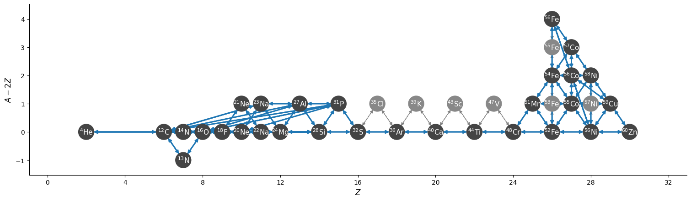
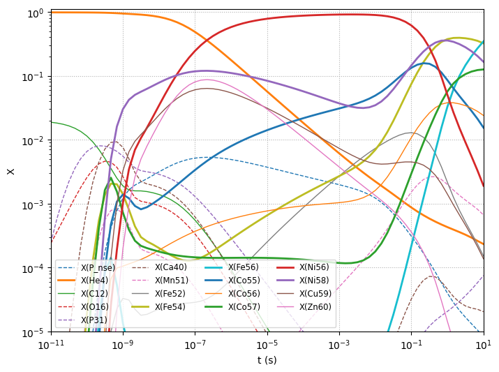
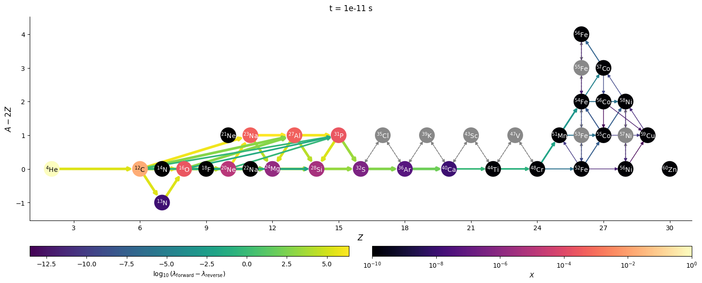
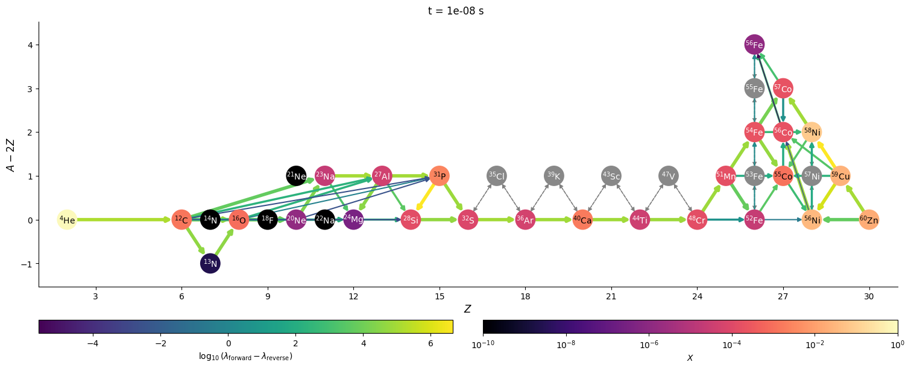
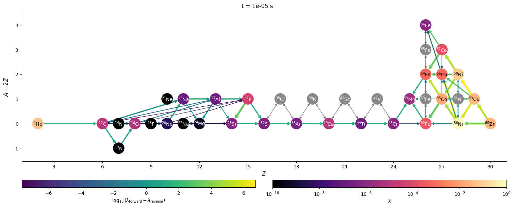
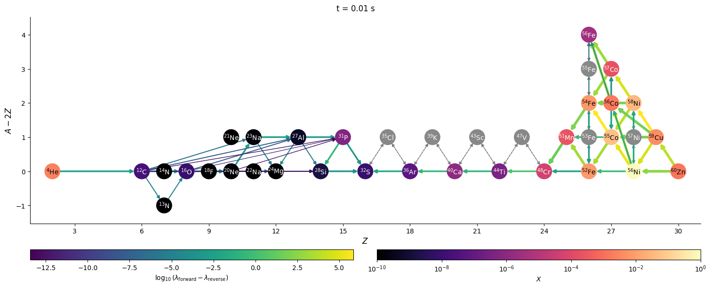
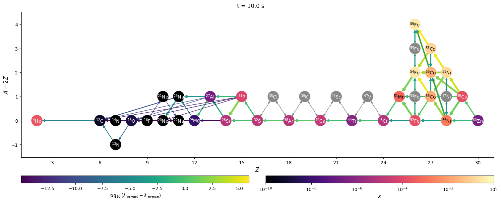

Explosive Nucleosynthesis#
Here we’ll explore burning up to iron group. To do this, we’ll create a moderately-sized network that includes links from He up to iron-group. And to make the integration easier, we’ll do a few approximations along the way.
import pynucastro as pyna
Assembling our library#
We start with a list of nuclei, including all \(\alpha\)-nuclei up to \({}^{56}\mathrm{Ni}\). We also add the intermediate nuclei that would participate in \((\alpha,p)(p,\gamma)\) reactions, as well as a few more nuclei, including those identified by Shen & Bildsten 2009 for bypassing the \({}^{12}\mathrm{C}(\alpha,\gamma){}^{16}\mathrm{O}\) rate.
nuclei = ["p",
"he4", "c12", "o16", "ne20", "mg24", "si28", "s32",
"ar36", "ca40", "ti44", "cr48", "fe52", "ni56", "zn60",
"al27", "p31", "cl35", "k39", "sc43", "v47",
"mn51", "co55", "cu59",
"n13", "n14", "f18", "ne21", "na22", "na23"]
For our initial library, we take all of the ReacLib rates that link these.
reaclib_lib = pyna.ReacLibLibrary()
core_lib = reaclib_lib.linking_nuclei(nuclei)
Now we’ll add some more nuclei in the iron group.
iron_peak = ["n", "p", "he4",
"mn51",
"fe52", "fe53", "fe54", "fe55", "fe56",
"co55", "co56", "co57",
"ni56", "ni57", "ni58",
"cu59", "zn60"]
We want the rates that connect these from ReacLib as well as tabulated weak rate compilations.
iron_reaclib = reaclib_lib.linking_nuclei(iron_peak)
weak_lib = pyna.TabularLibrary()
iron_weak_lib = weak_lib.linking_nuclei(iron_peak)
warning: Cu59 was not able to be linked in TabularLibrary
warning: He4 was not able to be linked in TabularLibrary
warning: Fe53 was not able to be linked in TabularLibrary
warning: Mn51 was not able to be linked in TabularLibrary
warning: Ni58 was not able to be linked in TabularLibrary
warning: Fe52 was not able to be linked in TabularLibrary
warning: Fe54 was not able to be linked in TabularLibrary
warning: Zn60 was not able to be linked in TabularLibrary
all_lib = core_lib + iron_reaclib + iron_weak_lib
Detailed balance#
Finally, we replace the reverse rates from ReacLib by rederiving them via detailed balance, and including the partition functions.
rates_to_derive = all_lib.backward().get_rates()
# now for each of those derived rates, look to see if the pair exists
for r in rates_to_derive:
fr = all_lib.get_rate_by_nuclei(r.products, r.reactants)
if fr:
all_lib.remove_rate(r)
d = pyna.DerivedRate(fr, use_pf=True)
all_lib.add_rate(d)
Removing duplicates#
There will be some duplicate rates now because we pulled rates both from ReacLib and from tabulated sources. Here we keep the tabulated version of any duplicate rates.
all_lib.eliminate_duplicates()
Creating the network and rate approximations#
Now that we have our library, we can make a network.
net = pyna.PythonNetwork(libraries=[all_lib])
Next, we will do the \((\alpha,p)(p,\gamma)\) approximation and eliminate the intermediate nuclei
net.make_ap_pg_approx(intermediate_nuclei=["cl35", "k39", "sc43", "v47"])
net.remove_nuclei(["cl35", "k39", "sc43", "v47"])
We will also approximate some of the neutron captures:
net.make_nn_g_approx(intermediate_nuclei=["fe53", "fe55", "ni57"])
net.remove_nuclei(["fe53", "fe55", "ni57"])
and finally, make some of the protons into NSE protons
# make all rates with A >= 48 use NSE protons
net.make_nse_protons(48)
Visualizing the network#
Let’s visualize the network
fig = net.plot(rotated=True, hide_xalpha=True,
size=(1500, 450),
node_size=550, node_font_size=11)

Burning to iron-group#
We’ll write out the network to a python module and do a test integration with it.
net.write_network("he_burn.py")
/opt/hostedtoolcache/Python/3.14.3/x64/lib/python3.14/site-packages/pynucastro/rates/derived_rate.py:120: UserWarning: C12 partition function is not supported by tables: set log_pf = 0.0 by default
warnings.warn(UserWarning(f'{nuc} partition function is not supported by tables: set log_pf = 0.0 by default'))
/opt/hostedtoolcache/Python/3.14.3/x64/lib/python3.14/site-packages/pynucastro/rates/derived_rate.py:120: UserWarning: N13 partition function is not supported by tables: set log_pf = 0.0 by default
warnings.warn(UserWarning(f'{nuc} partition function is not supported by tables: set log_pf = 0.0 by default'))
/opt/hostedtoolcache/Python/3.14.3/x64/lib/python3.14/site-packages/pynucastro/rates/derived_rate.py:120: UserWarning: N14 partition function is not supported by tables: set log_pf = 0.0 by default
warnings.warn(UserWarning(f'{nuc} partition function is not supported by tables: set log_pf = 0.0 by default'))
/opt/hostedtoolcache/Python/3.14.3/x64/lib/python3.14/site-packages/pynucastro/rates/derived_rate.py:120: UserWarning: p_nse partition function is not supported by tables: set log_pf = 0.0 by default
warnings.warn(UserWarning(f'{nuc} partition function is not supported by tables: set log_pf = 0.0 by default'))
import he_burn
from scipy.integrate import solve_ivp
import numpy as np
We’ll pick thermodynamic conditions that are very dense and hot–we should enter NSE here. And weak rates will also have a big effect, meaning that \(Y_e\) should evolve.
Initially, we have \(Y_e = 1/2\).
rho = 1.e9
T = 5.e9
X0 = np.zeros(he_burn.nnuc)
X0[he_burn.jhe4] = 0.98
X0[he_burn.jc12] = 0.02
Y0 = X0/he_burn.A
from pynucastro.screening import chugunov_2007
We’ll specific the time-points where we want to store the solution.
tmax = 10.0
tmin = 1.e-11
factor = 6
n = factor * int(np.log10(tmax) - np.log10(tmin)) + 1
t_eval = np.logspace(np.log10(tmin), np.log10(tmax), n, endpoint=True)
sol = solve_ivp(he_burn.rhs, [0, tmax], Y0,
method="BDF", jac=he_burn.jacobian,
t_eval=t_eval, args=(rho, T, chugunov_2007),
rtol=1.e-5, atol=1.e-8)
Was the integration successful?
sol.success
True
Plotting the evolution#
import matplotlib.pyplot as plt
Here we only plot the most abundant species
fig, ax = plt.subplots()
for i in range(he_burn.nnuc):
Xmax = sol.y[i, :].max() * he_burn.A[i]
if Xmax > 1.e-1:
ax.loglog(sol.t, sol.y[i,:] * he_burn.A[i], linewidth=2,
label=f"X({he_burn.names[i].capitalize()})")
elif Xmax > 1.e-2:
ax.loglog(sol.t, sol.y[i,:] * he_burn.A[i], linewidth=1,
label=f"X({he_burn.names[i].capitalize()})")
elif Xmax > 1.e-3:
ax.loglog(sol.t, sol.y[i,:] * he_burn.A[i], linewidth=1, ls="--",
label=f"X({he_burn.names[i].capitalize()})")
ax.set_ylim(1.e-5, 1.1)
ax.legend(fontsize="small", ncol=4, loc=3)
ax.set_xlabel("t (s)")
ax.set_ylabel("X")
ax.margins(0)
ax.grid(ls=":")
fig.set_size_inches(8, 6)

\(Y_e\) evolution#
X_final = sol.y[:, -1] * he_burn.A
comp = pyna.Composition(net.unique_nuclei)
comp.set_array(X_final)
Notice that \(Y_e\) has changed a lot due to electron captures.
comp.ye
0.47500140490841897
Visualizing network flow#
Finally, we can visualize the evolution of the flow through the network. We’ll just work with a few of the times that were saved. We’ll also show the net rate between nuclei (forward - reverse rate) to make it clearer.
for idx in range(0, n, 3*factor):
t = sol.t[idx]
Y = sol.y[:, idx]
comp.set_array(Y * he_burn.A)
fig = net.plot(rho, T, comp,
rotated=True, hide_xalpha=True,
size=(1500, 600),
ydot_cutoff_value=1.e-15,
use_net_rate=True,
color_nodes_by_abundance=True,
Z_range=(1, 31),
node_size=500, node_font_size=10)
fig.suptitle(f"t = {t} s")
/opt/hostedtoolcache/Python/3.14.3/x64/lib/python3.14/site-packages/pynucastro/rates/derived_rate.py:120: UserWarning: C12 partition function is not supported by tables: set log_pf = 0.0 by default
warnings.warn(UserWarning(f'{nuc} partition function is not supported by tables: set log_pf = 0.0 by default'))
/opt/hostedtoolcache/Python/3.14.3/x64/lib/python3.14/site-packages/pynucastro/rates/derived_rate.py:120: UserWarning: N13 partition function is not supported by tables: set log_pf = 0.0 by default
warnings.warn(UserWarning(f'{nuc} partition function is not supported by tables: set log_pf = 0.0 by default'))
/opt/hostedtoolcache/Python/3.14.3/x64/lib/python3.14/site-packages/pynucastro/rates/derived_rate.py:120: UserWarning: N14 partition function is not supported by tables: set log_pf = 0.0 by default
warnings.warn(UserWarning(f'{nuc} partition function is not supported by tables: set log_pf = 0.0 by default'))
/opt/hostedtoolcache/Python/3.14.3/x64/lib/python3.14/site-packages/pynucastro/rates/derived_rate.py:120: UserWarning: p_nse partition function is not supported by tables: set log_pf = 0.0 by default
warnings.warn(UserWarning(f'{nuc} partition function is not supported by tables: set log_pf = 0.0 by default'))
/opt/hostedtoolcache/Python/3.14.3/x64/lib/python3.14/site-packages/pynucastro/rates/derived_rate.py:120: UserWarning: C12 partition function is not supported by tables: set log_pf = 0.0 by default
warnings.warn(UserWarning(f'{nuc} partition function is not supported by tables: set log_pf = 0.0 by default'))
/opt/hostedtoolcache/Python/3.14.3/x64/lib/python3.14/site-packages/pynucastro/rates/derived_rate.py:120: UserWarning: N13 partition function is not supported by tables: set log_pf = 0.0 by default
warnings.warn(UserWarning(f'{nuc} partition function is not supported by tables: set log_pf = 0.0 by default'))
/opt/hostedtoolcache/Python/3.14.3/x64/lib/python3.14/site-packages/pynucastro/rates/derived_rate.py:120: UserWarning: N14 partition function is not supported by tables: set log_pf = 0.0 by default
warnings.warn(UserWarning(f'{nuc} partition function is not supported by tables: set log_pf = 0.0 by default'))
/opt/hostedtoolcache/Python/3.14.3/x64/lib/python3.14/site-packages/pynucastro/rates/derived_rate.py:120: UserWarning: p_nse partition function is not supported by tables: set log_pf = 0.0 by default
warnings.warn(UserWarning(f'{nuc} partition function is not supported by tables: set log_pf = 0.0 by default'))




